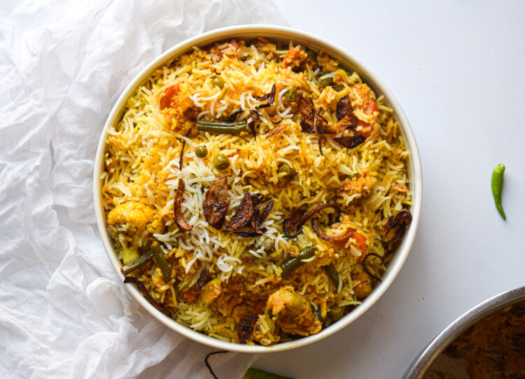

Biryani

Description
Biryani is a fragrant and flavorful rice dish made with long-grain basmati rice,
aromatic spices, and marinated meat or vegetables. It is traditionally cooked in
layers with saffron-infused milk and garnished with fried onions and fresh herbs.
Biryani is a popular dish in South Asian cuisine and is often served at festive
occasions and celebrations.
Ingredients
- Basmati rice
- Chicken or mutton
- Spices (e.g., cumin, coriander, cardamom, cinnamon)
- Yogurt
- Onions
- Tomatoes
- Saffron
- Fresh herbs (e.g., mint, cilantro)
Steps
Soak the basmati rice in water for 30 minutes, then drain.
Marinate the meat with yogurt and spices for at least 1 hour.
Heat oil in a pan and fry sliced onions until golden brown.
Layer the marinated meat, rice, fried onions, and tomatoes in a heavy-bottomed pot.
Dissolve saffron in warm milk and pour over the rice.
Cover and cook on low heat until the rice is fully cooked and aromatic.
Garnish with fried onions and fresh herbs before serving.